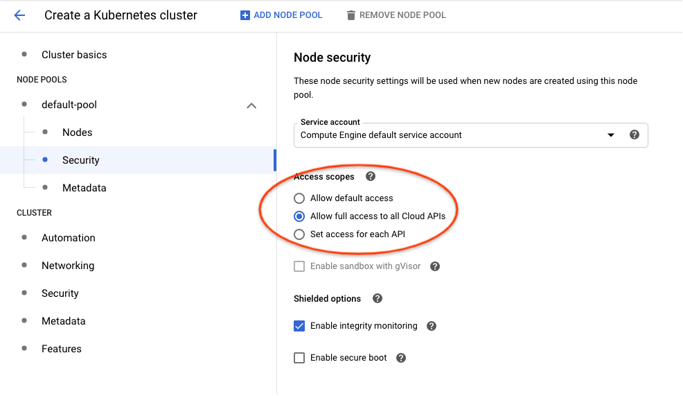
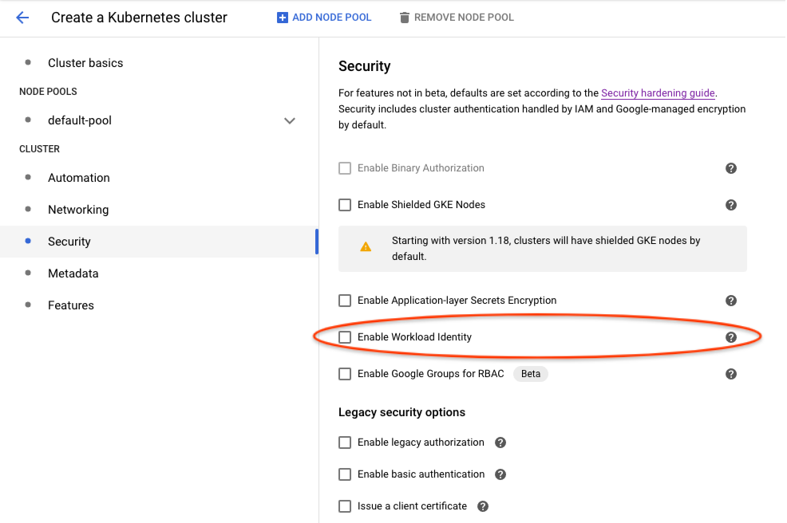

Version v1.6 of the documentation is no longer actively maintained. The site that you are currently viewing is an archived snapshot. For up-to-date documentation, see the latest version.
Authenticating Pipelines to Google Cloud
7 minute read
This page describes authentication for Kubeflow Pipelines to Google Cloud. Available options listed below have different tradeoffs. You should choose the one that fits your use-case.
- Configuring your cluster to access Google Cloud using Compute Engine default service account with the “cloud-platform” scope is easier to set up than the other options. However, this approach grants excessive permissions. Therefore, it is not suitable if you need workload permission separation.
- Workload Identity takes more efforts to set up, but allows fine-grained permission control. It is recommended for production use-cases.
- Google service account keys stored as Kubernetes secrets is the legacy approach and no longer recommended in Google Kubernetes Engine. However, it’s the only option to use Google Cloud APIs when your cluster is an anthos or on-prem cluster.
Before you begin
There are various options on how to install Kubeflow Pipelines in the Installation Options for Kubeflow Pipelines guide. Be aware that authentication support and cluster setup instructions will vary depending on the method you used to install Kubeflow Pipelines.
- For Kubeflow Pipelines standalone, you can compare and choose from all 3 options.
- For full Kubeflow starting from Kubeflow 1.1, Workload Identity is the recommended and default option.
- For AI Platform Pipelines, Compute Engine default service account is the only supported option.
Compute Engine default service account
This is good for trying out Kubeflow Pipelines, because it is easy to set up.
However, it does not support permission separation for workloads in the cluster. Any workload in the cluster will be able to call any Google Cloud APIs in the chosen scope.
Cluster setup to use Compute Engine default service account
By default, your Google Kubernetes Engine nodes use Compute Engine default service account. If you allowed cloud-platform scope when creating the cluster,
Kubeflow Pipelines can authenticate to Google Cloud and manage resources in your project without further configuration.
Use one of the following options to create a Google Kubernetes Engine cluster that uses the Compute Engine default service account:
- If you followed instructions in Setting up AI Platform Pipelines and checked
Allow access to the following Cloud APIs, your cluster is already using Compute Engine default service account. - In Google Cloud Console UI, you can enable it in
Create a Kubernetes cluster -> default-pool -> Security -> Access Scopes -> Allow full access to all Cloud APIslike the following:  - Using
gcloudCLI, you can enable it with--scopes cloud-platformlike the following:
gcloud container clusters create <cluster-name> \
--scopes cloud-platform
Please refer to gcloud container clusters create command documentation for other available options.
Authoring pipelines to use default service account
Pipelines don’t need any specific changes to authenticate to Google Cloud, it will use the default service account transparently.
However, you must update existing pipelines that use the use_gcp_secret kfp sdk operator. Remove the use_gcp_secret usage to let your pipeline authenticate to Google Cloud using the default service account.
Securing the cluster with fine-grained Google Cloud permission control
Workload Identity
Workload Identity is the recommended way for your Google Kubernetes Engine applications to consume services provided by Google APIs. You accomplish this by configuring a Kubernetes service account to act as a Google service account. Any Pods running as the Kubernetes service account then use the Google service account to authenticate to cloud services.
Referenced from Workload Identity Documentation. Please read this doc for:
- A detailed introduction to Workload Identity.
- Instructions to enable it on your cluster.
- Whether its limitations affect your adoption.
Terminology
This document distinguishes between Kubernetes service accounts (KSAs) and Google service accounts (GSAs). KSAs are Kubernetes resources, while GSAs are specific to Google Cloud. Other documentation usually refers to both of them as just “service accounts”.
Authoring pipelines to use Workload Identity
Pipelines don’t need any specific changes to authenticate to Google Cloud. With Workload Identity, pipelines run as the Google service account that is bound to the KSA.
However, existing pipelines that use use_gcp_secret kfp sdk operator need to remove the use_gcp_secret usage to use the bound GSA.
You can also continue to use use_gcp_secret in a cluster with Workload Identity enabled and use_gcp_secret will take precedence for those workloads.
Cluster setup to use Workload Identity for Full Kubeflow
Starting from Kubeflow 1.1, Kubeflow Pipelines supports multi-user isolation. Therefore, pipeline runs are executed in user namespaces using the default-editor KSA. The default-editor KSA is auto-bound to the GSA specified in the user profile, which defaults to a shared GSA ${KFNAME}-user@${PROJECT}.iam.gserviceaccount.com.
If you want to bind the default-editor KSA with a different GSA for a specific namespace, refer to the In-cluster authentication to Google Cloud guide.
Additionally, the Kubeflow Pipelines UI, visualization, and TensorBoard server instances are deployed in your user namespace using the default-editor KSA. Therefore, to visualize results in the Pipelines UI, they can fetch artifacts in Google Cloud Storage using permissions of the same GSA you configured for this namespace.
Cluster setup to use Workload Identity for Pipelines Standalone
1. Create your cluster with Workload Identity enabled
-
In Google Cloud Console UI, you can enable Workload Identity in
Create a Kubernetes cluster -> Security -> Enable Workload Identitylike the following:  -
Using
gcloudCLI, you can enable it with:
gcloud beta container clusters create <cluster-name> \
--release-channel regular \
--workload-pool=project-id.svc.id.goog
References:
2. Deploy Kubeflow Pipelines
Deploy via Pipelines Standalone as usual.
3. Bind Workload Identities for KSAs used by Kubeflow Pipelines
The following helper bash scripts bind Workload Identities for KSAs used by Kubeflow Pipelines:
- gcp-workload-identity-setup.sh helps you create GSAs and bind them to KSAs used by pipelines workloads. This script provides an interactive command line dialog with explanation messages.
- wi-utils.sh alternatively provides minimal utility bash functions that let you customize your setup. The minimal utilities make it easy to read and use programmatically.
For example, to get a default setup using gcp-workload-identity-setup.sh, you can
$ curl -O https://raw.githubusercontent.com/kubeflow/pipelines/master/manifests/kustomize/gcp-workload-identity-setup.sh
$ chmod +x ./gcp-workload-identity-setup.sh
$ ./gcp-workload-identity-setup.sh
# This prints the command's usage example and introduction.
# Then you can run the command with required parameters.
# Command output will tell you which GSAs and Workload Identity bindings have been
# created.
4. Configure IAM permissions of used GSAs
If you used gcp-workload-identity-setup.sh to bind Workload Identities for your cluster, you can simply add the following IAM bindings:
- Give GSA
<cluster-name>-kfp-system@<project-id>.iam.gserviceaccount.comStorage Object Viewerrole to let UI load data in GCS in the same project. - Give GSA
<cluster-name>-kfp-user@<project-id>.iam.gserviceaccount.comany permissions your pipelines need. For quick tryouts, you can give itProject Editorrole for all permissions.
If you configured bindings by yourself, here are Google Cloud permission requirements for KFP KSAs:
- Pipelines use
pipeline-runnerKSA. Configure IAM permissions of the GSA bound to this KSA to allow pipelines use Google Cloud APIs. - Pipelines UI uses
ml-pipeline-uiKSA. Pipelines Visualization Server usesml-pipeline-visualizationserverKSA. If you need to view artifacts and visualizations stored in Google Cloud Storage (GCS) from pipelines UI, you should add Storage Object Viewer permission (or the minimal required permission) to their bound GSAs.
Google service account keys stored as Kubernetes secrets
It is recommended to use Workload Identity for easier and secure management, but you can also choose to use GSA keys.
Authoring pipelines to use GSA keys
Each pipeline step describes a
container that is run independently. If you want to grant access for a single step to use
one of your service accounts, you can use
kfp.gcp.use_gcp_secret().
Examples for how to use this function can be found in the
Kubeflow examples repo.
Cluster setup to use use_gcp_secret for Full Kubeflow
From Kubeflow 1.1, there’s no longer a user-gcp-sa secrets deployed for you. Recommend using Workload Identity instead.
For Kubeflow 1.0 or earlier, you don’t need to do anything. Full Kubeflow deployment has already deployed the user-gcp-sa secret for you.
Cluster setup to use use_gcp_secret for Pipelines Standalone
Pipelines Standalone require your manual setup for the user-gcp-sa secret used by use_gcp_secret.
Instructions to set up the secret:
-
First download the GCE VM service account token (refer to Google Cloud documentation for more information):
gcloud iam service-accounts keys create application_default_credentials.json \ --iam-account [SA-NAME]@[PROJECT-ID].iam.gserviceaccount.com -
Run:
kubectl create secret -n [your-namespace] generic user-gcp-sa \ --from-file=user-gcp-sa.json=application_default_credentials.json
Feedback
Was this page helpful?
Thank you! Send your feedback to us.
Sorry to hear that. Please tell us how we can improve.